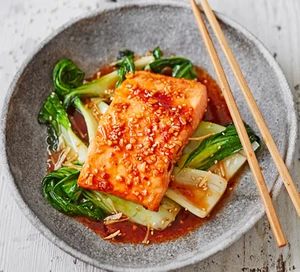

Salmon Teriyaki

Sweet chilli, honey, sesame oil, mirin and soy combine to make a punchy sauce for fish.
Ingredients
- 2 skinless salmon fillets
- 1 tbsp sweet chilli sauce
- 1 tbsp honey
- 1 tsp sesame oil
- 1 tbsp mirin or dry sherry
- 2 tbsp soy sauce
- 2 tsp finely grated ginger
- brown rice or noodles, to serve (optional)
For the pak choi
- 2 large pak choi (about 250g)
- 2 tsp vegetable oil
- 2 tsp sesame oil
- 3 garlic cloves, grated
- 75ml fish or vegetable stock
- 2 tsp toasted sesame seeds, for sprinkling
Method
- Heat oven to 200C/180C fan/gas 6 and put 2 skinless salmon fillets in a shallow baking dish.
- Mix 1 tbsp sweet chilli sauce, 1 tbsp honey, 1 tsp sesame oil, 1 tbsp mirin or dry sherry, 2 tbsp soy sauce and 2 tsp finely grated ginger in a small bowl and pour over the salmon so the fillets are completely covered. Bake for 10 mins.
- Meanwhile, cook the pack choi. Cut a slice across the base of 2 large pak choi so the leaves separate.
- Heat 2 tsp vegetable oil and 2 tsp sesame oil in a wok, add 3 grated garlic cloves and stir-fry briefly to soften.
- Add the pak choi and fry until the leaves start to wilt. Pour over 75ml fish or vegetable stock, tightly cover the pan and allow to cook for 5 mins – you're aiming for the stems to be tender but still have a bit of bite.
- Serve the pak choi in shallow bowls, top with the salmon and spoon over the juices. Scatter with 2 tsp toasted sesame seeds and serve with brown rice or noodles, if you like.